Описание тестов монитора
Добро пожаловать
monitor-test — сервис для теста монитора компьютера или дисплея мобильного устройства. С помощью тестовых экранов вы можете легко настроить параметры вашего монитора, чтобы получить наилучшее качество изображения. Ряд тестов помогут вам оценить качество изображения монитора. Даже с первых тестовых экранов, вы можете откалибровать монитор, отрегулировав яркость, контрастность, фазу синхронизации, резкость и гамму-коррекцию монитора.
Тесты лучше всего рассматривать при тусклом или темном окружающем свете и в полноэкранном режиме. При запуске тестов будет автоматически предложено перейти в полноэкранный режим. При движении указателя мыши внизу экрана появится панель управления тестами. С помощью элементов управления на панели вы сможете выбирать нужный вам тест, поворачивать слайд (если это предусмотрено тестом), вернуться на главную страницу или выключить полноэкранный режим. С левой и правой стороны экрана при движении мыши отображаются кнопки перехода между тестами. Элементы управления для удобства исчезают с экрана при отсутствии движения указателя мыши. Кроме того, предусмотрены горячие клавиши управления. Для перехода между тестовыми экранами используйте клавиши «Влево», «Вправо» или «Пробел», либо колесико мыши. Для поворота слайдов – «Вверх» и «Вниз», для выхода из теста - «Esc».
Если у вас установлены какие-либо системы управления цветом, действующих в операционной системе или дополнительное корректирующее ПО видеокарты, рекомендуется отключить их в первую очередь. Для начала необходимо внести корректировки в настройки монитора, чтобы его характеристики были как можно ближе к идеалу, насколько это возможно, и только после этого использовать какое-либо программное обеспечение управления цветом, чтобы компенсировать любые малые возможные отклонения или недостатки.
Далее описано что и как можно проверить с помощью тестов сервиса monitor-test, на что следует обратить внимание и прочие полезные советы.
Цветопередача

Этот классический шаблон используется для проверки настройки основных цветов и оттенков. В настоящее время особых проблем с передачей цвета обычно не возникает (особенно на LCD мониторах), так что вам скорее всего даже не нужно изменять эти настройки. Этот тест может быть использован для проверки того, что монитор правильно отображает цвета без каких-либо артефактов. Если ваш монитор поддерживает фильтры (или имеется ПО фильтрации цветов), то вы можете с помощью таких фильтров проверить, что монитор четко передает цвета без примесей (т.е. например, при использовании красного фильтра, красная полоса не должна менять оттенок).
Битые пиксели

 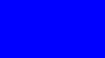
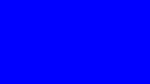
В современных мониторах для цветовоспроизведения используется цветовая модель RGB (аббревиатура английских слов Red, Green, Blue — красный, зелёный, синий). Каждый пиксель экрана состоит из трех каналов. Смешивание этих трех цветов в разной интенсивности дают различные цвета, одинаковой интенсивности — оттенки серого. В серии тестов цветопередачи имеются одноцветные шаблонные экраны. В этих тестах используется только один определенный цветовой канал. Отдельно красный экран, отдельно зеленый и отдельно синий.
Эти тесты кроме полноты цвета канала позволяют сделать проверку на битые пиксели или как их еще называют — мертвые пиксели. Для проверки на битые пиксели необходимо на одноцветном тестовом экране внимательно просмотреть весь экран. На нем не должно быть черных точек. Проверять нужно каждый канал, т.к. каждый пиксель состоит из трех каналов. Поэтому совсем не обязательно, что если на одном канале все хорошо, то и на другом будет все в порядке. Если вы нашли черную точку на одном из этих тестов — значит вы нашли битый пиксель. Определенно, наличие дефекта даже в одном из каналов пикселя, приведет к искажению цветовоспроизведения в данном пикселе (точке). Наличие нескольких мертвых пикселей нормально для старых мониторов, но новый не должен иметь таких дефектов.В данной серии дополнительно имеются цветовые тесты смешивания каналов: желтый цвет (красный+зеленый), пурпурный (красный+синий), голубой (зеленый+синий) и белый (красный+зеленый+синий).
Градиенты
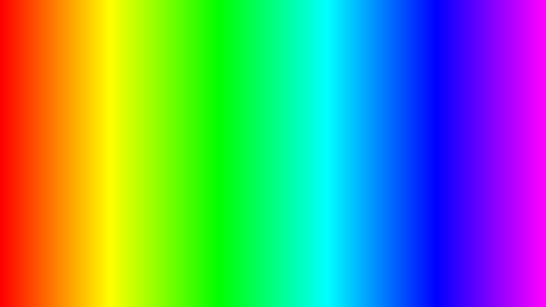
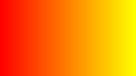 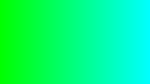 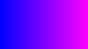
В данной серии тестов представлены экранные шаблоны с плавными градиентами. Все градиенты должны отображаться гладко, без каких-либо полос, линий и резкой перемены цвета. Полосы появляются если монитор не в состоянии правильно воспроизвести истинные цвета и плавный переход. Хороший монитор будет отображать совершенно плавный переход.
Мерцание

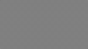
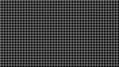

На многих VGA-мониторах необходимо корректировать так называемый параметр clock/phase (синхронизация фазы). Данные тестовые изображения лучше всего рассматривать в полноэкранном режиме. На большом расстоянии от монитора они должны выглядеть серыми. При близком рассмотрении должен быть четко виден мелкий узор чередующихся контрастных пикселей (черных и белых).
При неправильно настроенной синхронизации, изображения мерцают или создается впечатление «бегающих пикселей». Или если изображения выглядят сплошным серым цветом (не видно точек даже при близком рассмотрении) или есть черно-белые полосы (вертикальные или изогнутые), то также необходима корректировка.
Большинство мониторов имеют функцию автоматической настройки данного параметра. Обычно она называется «Auto» или «AutoSet». В зависимости от типа монитора могут быть опции ручной настройки.
Резкость

Резкость очень важна. Резкость отвечает за уровень четкости границы между светлыми и темными участками. Например, если вам кажется, что буквы текста размыты, то скорее всего уровень резкости недостаточен. Настроив определенный уровень резкости на дисплее можно получить приятный для глаза картинку или текст. Но чрезмерная резкость так же плохо, как недостаточная.
В отличие от яркости, контрастности, цвета и оттенка, не существует «идеального» уровня резкости. Т.к., по крайней мере частично, восприятие и оптимальное значение резкости изображения зависит от целого ряда факторов, включая способ отображения, размер экрана и как далеко вы обычно находитесь от экрана.
На тесте, пример которого приведен выше, при достаточном уровне резкости вы должны четко видеть мелкие узоры в шахматном порядке. При недостатовной резкости некоторые квадраты сливаются в сплошной серый цвет. Центральный круг должен четко выделяться.
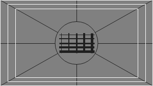
На другом тесте вы должны видеть четкие прямогуольники и линии без размытых краев, ореолов и прочих артефактов. Диагональные линии также должны быть ровными.
Контрастность и яркость
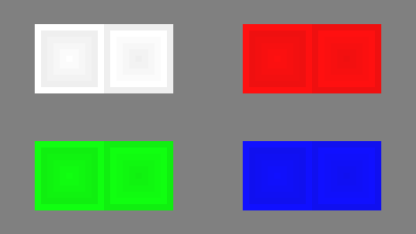
В данной серии тестов на изображениях вы должны видеть четкие границы между полосками и квадратами. Если какие-то участки сливаются и становятся одного цвета или не видны на фоне вовсе, то значит необходимо отрегулировать яркость и контрастность. На хорошем мониторе, вы должны увидеть равные ступени яркости во всем представленном в тестах диапазоне и во всех цветах.
Зонная яркость
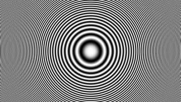
Этот тест хороший способ проверить уровень общего воспроизводства яркости, и не плохой шаблон для проверки четкости. Центральная часть экрана должна выглядеть гладкой и чистой. Дальше от центра, ближе к краям, контуры должны cтановиться все более и более резкими и менее гладкими. Ближе к краям экрана могут появиться мнимые ложные концентрические окружности. Если эти контуры яйцевидные или овальные, то что-то не так. В углах экрана возможен небольшой, почти незаметный спад яркости. Если спад яркости большой или же все сливается, то это не так хорошо.
Геометрия и сетки
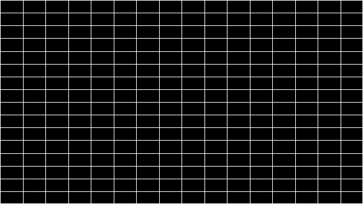
Эти тесты предназначены для проверки правильной геометрии и вписываемости воспроизводимого монитором изображения.
Отсечение изображения

Не каждый дисплей на самом деле показывает вам каждый пиксель, который передается видеокартой монитору. Этот тест покажет вам, как часть изображения отсутствует. Если монитор настроен правильно, вы должны увидеть белую линию на внешней кромке всех пронумерованных прямоугольников по всему краю экрана. Если у некоторых прямоугольникв не хватает внешней белой линии у края экрана, то это значит, что край изображения обрезается. Номер у такого отсеченного прямоугольника показывает как много пикселей не хватает на этом краю экрана.
Формат 16:9
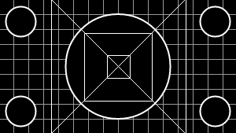
Тест, пример которого приведен выше, предназначен для проверки широкоформатных дисплеев с соотношением сторон 16:9. Здесь вы должны увидеть сетку из 16 одинаковых квадратов по горизонтали и 9 таких же квадратов по вертикали. По углам должы быть видны окружности правильной формы. Если вы их не видите или они отсечены или искажены, то ваш монитор либо не поддерживает соответствующий режим, либо необходимо настроить масштабирование изображения, которое может быть в сервисном меню дисплея.